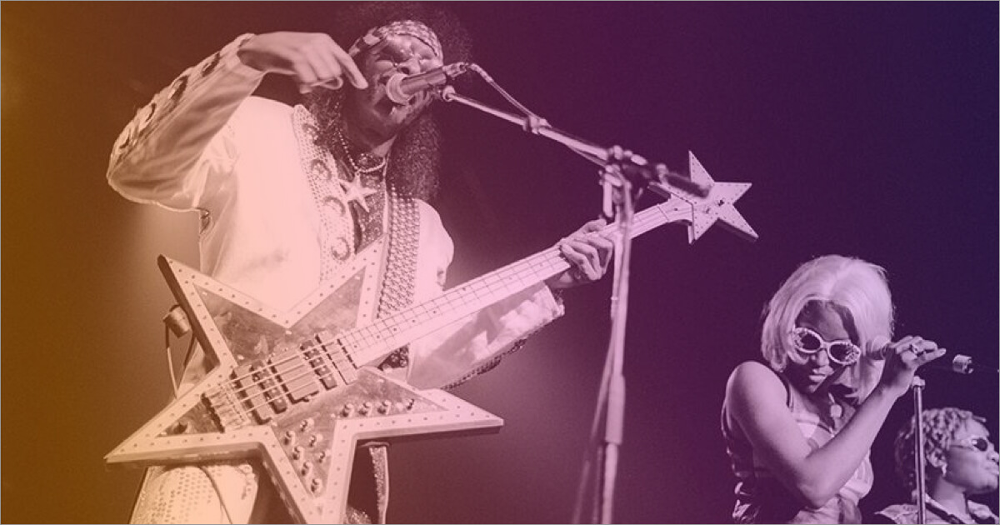

Funk is a form of dance music that gained significance in the mid-1960s. It’s powered by hard drum beats and bass lines.
And while funk music is nowhere as popular as it once was, the genre still has its fans.
More Bounce to the Ounce by Zapp, Super Freak by Rick James, and Pick Up The Pieces by Average White Band are among the most well-known funk songs.
Funk is a music genre that originated within the African-American communities in the mid-1960s, when musicians created a rhythmic, danceable, new form of Soul music with additional jazz and rhythm and blues influences. It de-emphasizes melody and chord progressions and focuses on a strong rhythmic groove of a bassline played by an electric bassist and a drum part played by a percussionist, often at slower tempos than other popular music. Funk typically consists of a complex percussive groove with rhythm instruments playing interlocking grooves that create a "hypnotic" and "danceable" feel. Funk uses the same richly colored extended chords found in bebop jazz, such as minor chords with added sevenths and elevenths, or dominant seventh chords with altered ninths and thirteenths.